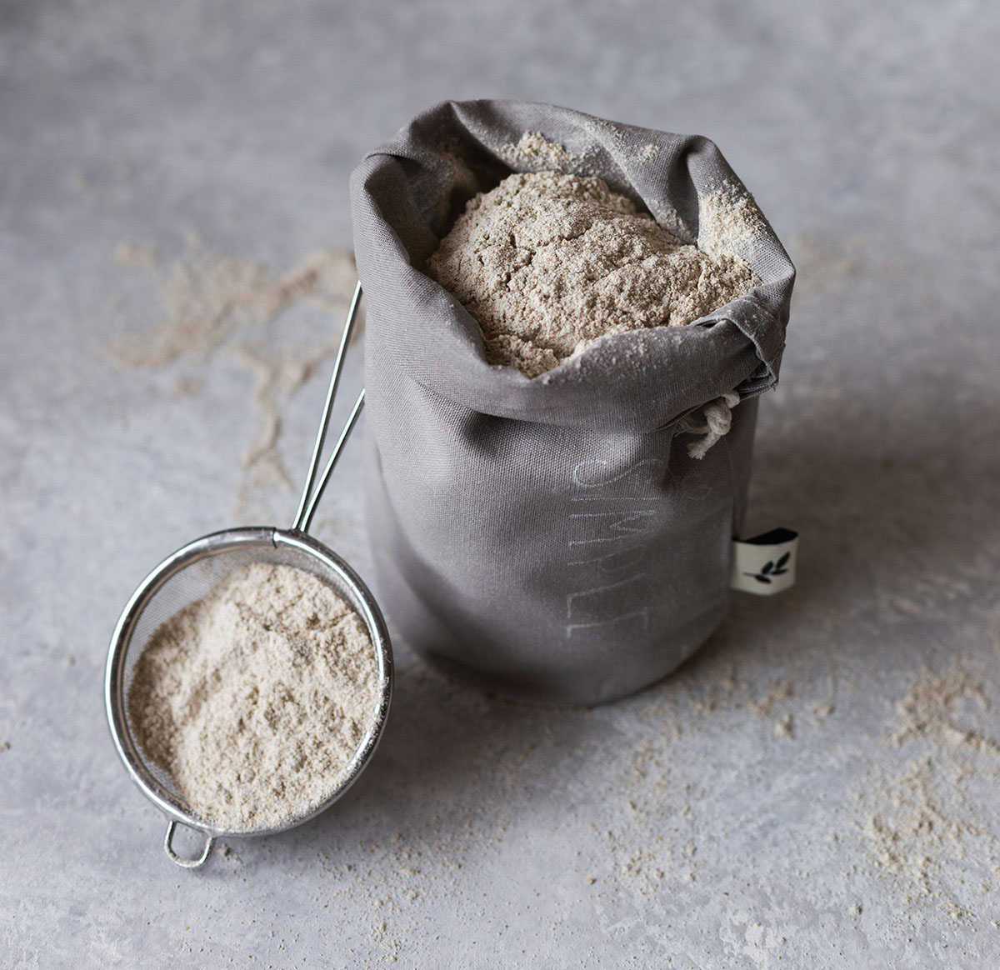
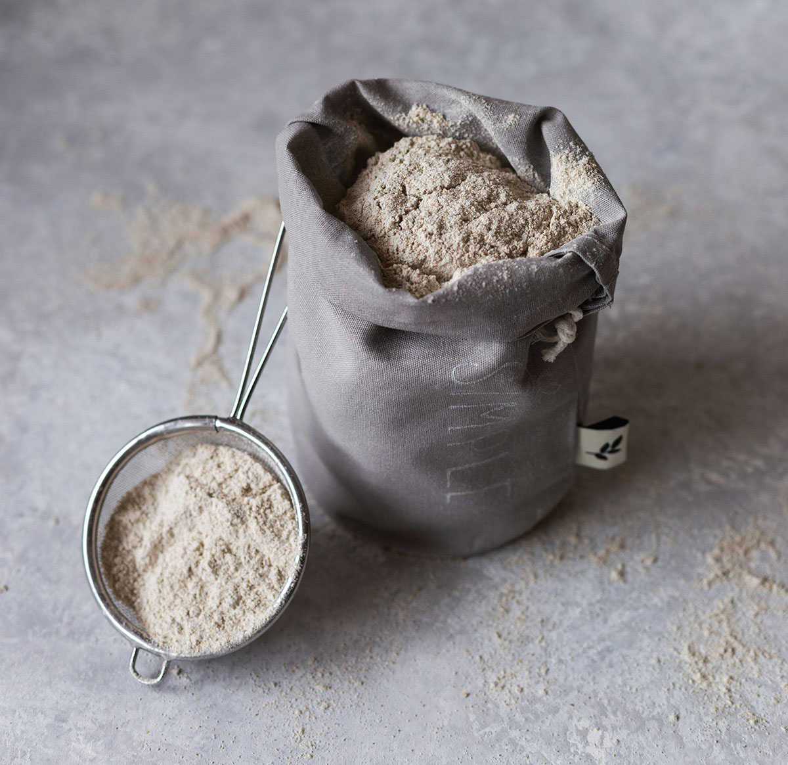

Flour
 

Flour is very important. The freshness, treatment, additives, purity, and more factor into the best results of the bread. While many might gravitate towards bread flour due to its high protein content, which is great for developing gluten, unbleached all-purpose flour is a versatile and excellent choice for sourdough bread. Its moderate protein level—usually around 10-12%—strikes the perfect balance between being strong enough to support the fermentation and light enough to produce a tender crumb.
Unbleached all-purpose flour is preferred over bleached flour because the bleaching process alters the flour's protein structure. This can affect the fermentation process and the bread's overall texture and taste. Unbleached flour retains its natural color and flavor, contributing to a more robust and complex sourdough loaf.
Moreover, using all-purpose flour for sourdough bread highlights the bread's unique characteristics without overpowering them with too much gluten strength, which is often the case with bread flour. This makes all-purpose flour not just a compromise but a deliberate choice for bakers seeking a certain texture and flavor profile in their sourdough bread.
When selecting your flour, consider the source as well. Flours that are milled from organically grown wheat can bring an additional layer of flavor complexity to your bread. Organic flours often contain a diversity of wheat varieties, each contributing its unique flavors and characteristics to the flour blend.
My Recipe
Several years ago, I watched and adapted my baking routine based on this video, a master baker in Ireland. My recipe differs a little, but this video is where I started.
I use grams for measurement because it is more accurate than imperial measurements. My typical bake is 6 750g loaves. 30g Salt, 1500g warm filterd water, 2350g Montana Premium Unbleached flour, 960g of starter. Sometimes I'll subtitute 450g of freshly ground whole hard red wheat flour in place of the unbleached flour for added nuttiness flavor and texture.
Here are some more images of my bread and other interests on baking. There are some woes and some successes. I hope you enjoy!